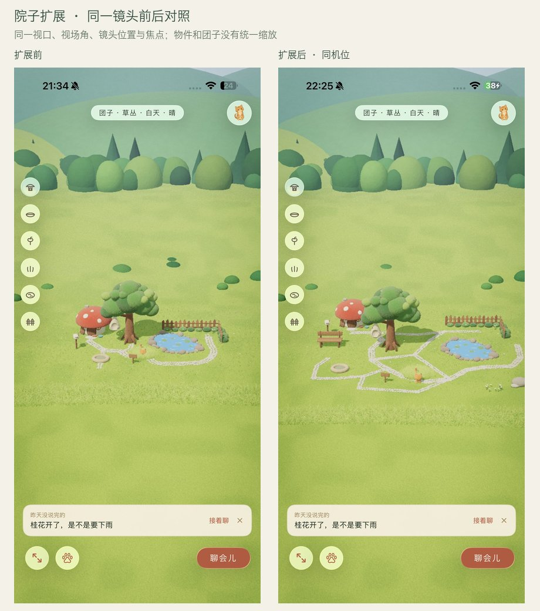
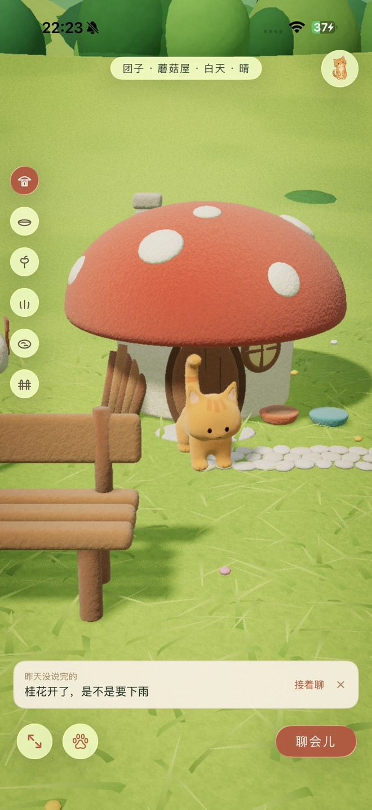
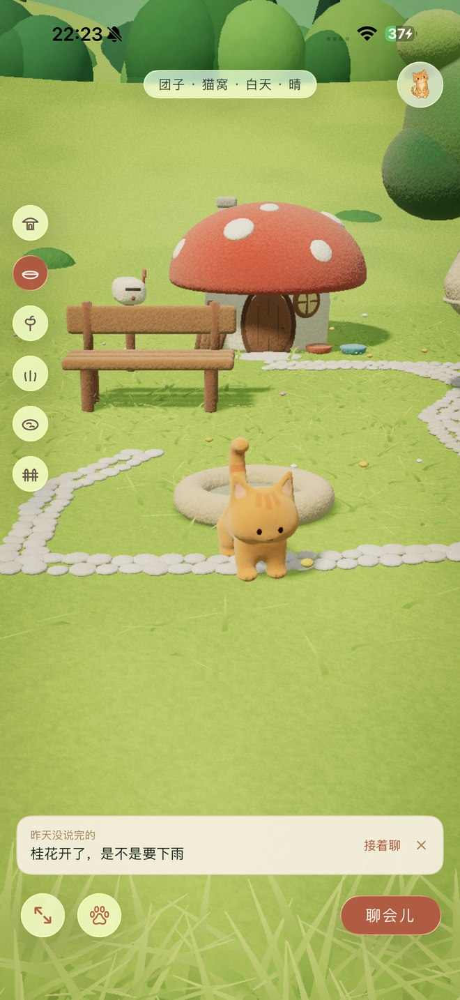
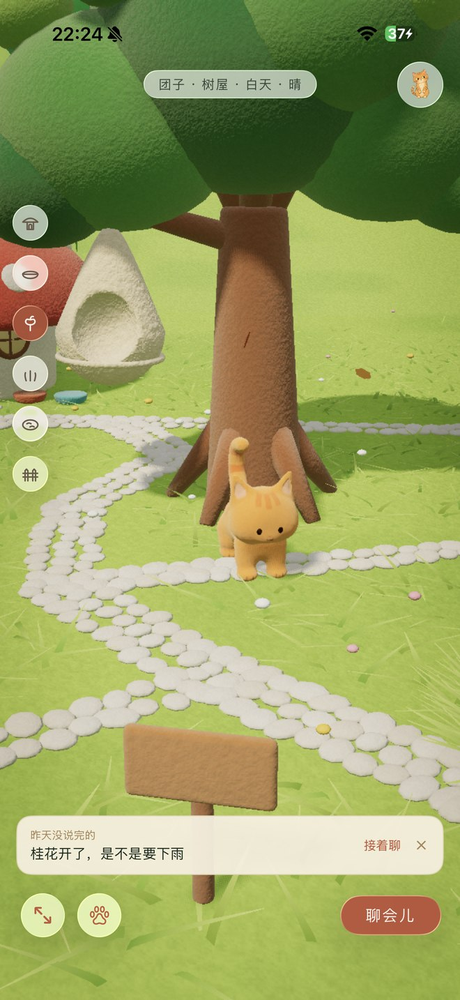
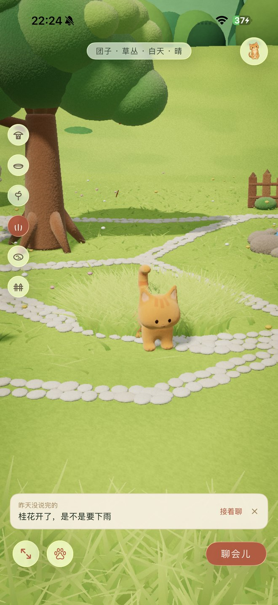
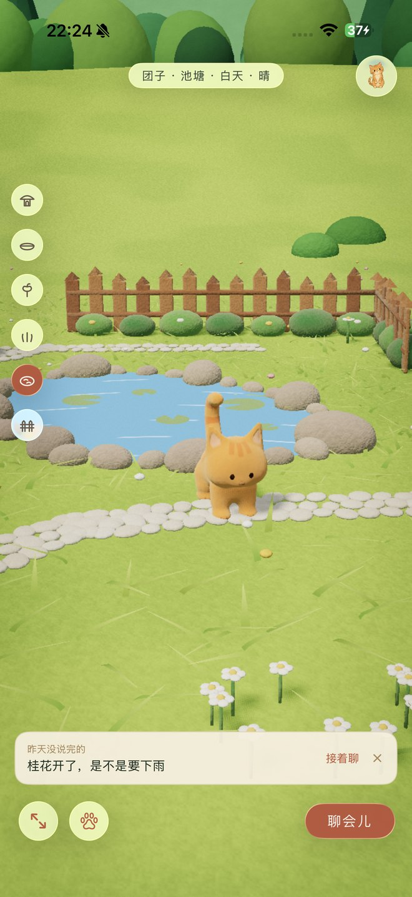
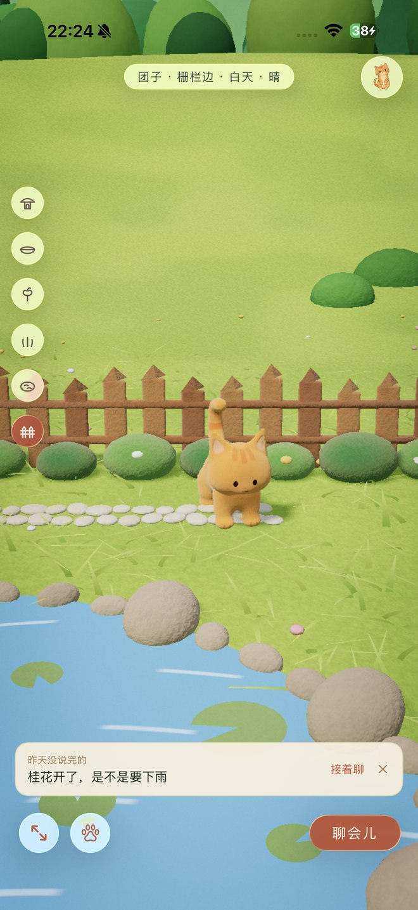
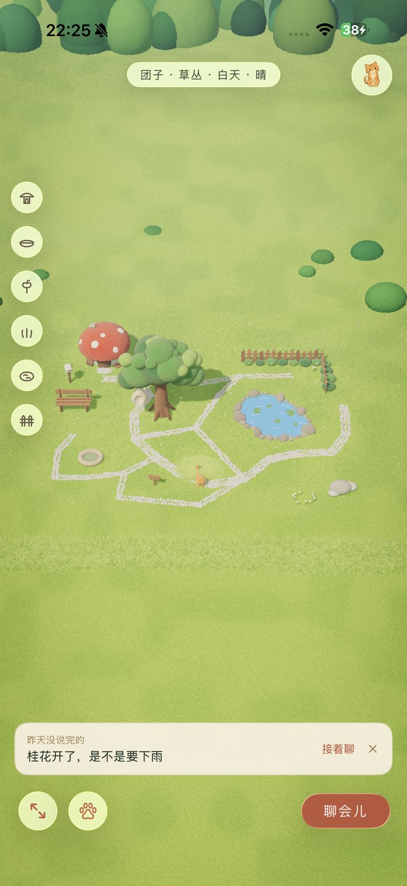

小院 · 扩展版评审
CATTT / 院子扩展 · 2026.09.26
把院子展开，留一片可以散步的草地。
房屋、大树与池塘拉开距离，增加草地穿行、池边绕行和树下停留。少量添木凳、花丛与山石，远山尺度与团子大小保持。以下均为真机渲染，观感待评审。
同一镜头，院子真正扩展了
左侧是扩展前；右侧固定为相同相机，仅改变院内布局。扩展后完整总览见下方七处图。新版路段总长约31米，旧版约10.8米；详见验收报告。

蘑菇屋

猫窝

树屋

草丛

池塘

栅栏

全院总览
